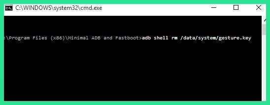

This next option will only work if you've previously enabled USB debugging on your phone, and even then, it will only work if you've allowed the computer you're using to connect via ADB. But if you meet those requirements, it's a perfect way to unlock your device. However, note that models with encryption enabled by default may not be compatible with this workaround.
Start by connecting your phone to your computer with a USB data cable, then open a command prompt window in your ADB installation directory. From here, type the following command, then hit Enter below (1)adb shell rm /data/system/gesture.key

Next, reboot your phone and the secure lock screen should be gone, allowing you to access your phone. But this is only temporary, so make sure to set a new pattern, PIN, or password before you reboot again.